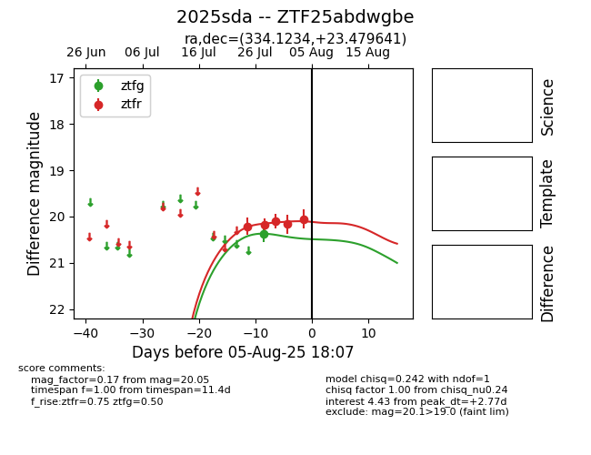

Target 2025sda at 2025-08-05 18:07, see:
FINK: fink-portal.org/2025sda
Lasair: lasair-ztf.lsst.ac.uk/objects/2025sda
ALeRCE: alerce.online/object/2025sda
TNS: wis-tns.org/object/2025sda
YSE: ziggy.ucolick.org/yse/transient_detail/2025sda
alt names
ZTF25abdwgbe (ztf,fink)
2025sda (tns,yse)
coordinates:
equatorial (ra, dec) = (334.1234,+23.47964)
galactic (l, b) = (82.8017,-27.06935)
photometry
last ztfg=20.37, ztfr=20.05
1 ztfg, 5 ztfr detections
